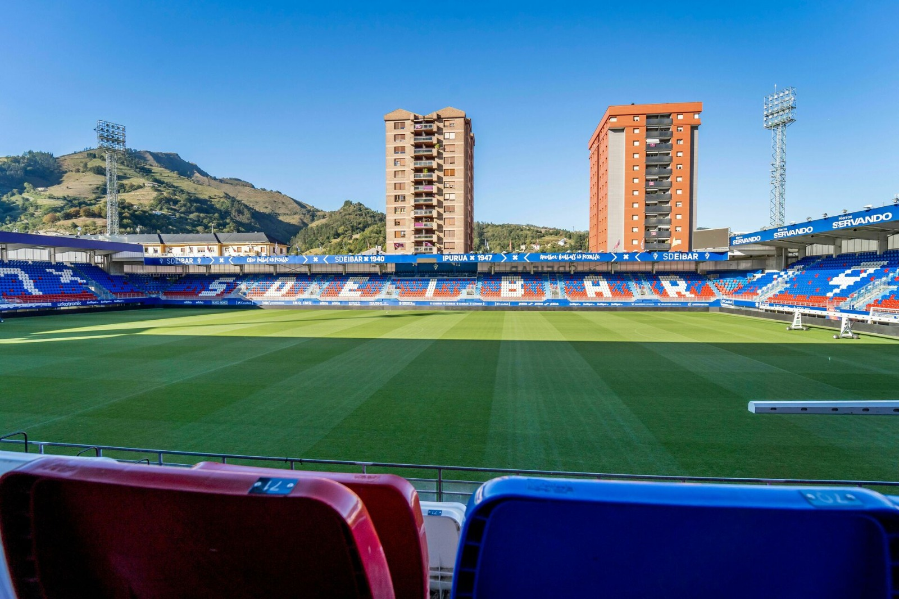

 <link rel="stylesheet" href="../style/myStyle.css">
 
 <!-- Sección de noticias -->
 <section class="noticias-contenedor">
    <h2 class="titulo-noticias">NOTICIAS</h2> <!-- Alineado a la izquierda -->
    <div class="row">
        <!-- Noticia principal -->
        <div class="col-md-6 col-sm-6 noticia-principal">
            
            <div class="texto-noticia-principal">
                <h3>Nuevo Jugador de Juventus</h3>
                <p>26 de Agosto del 2024</p>
            </div>
        </div>

        <!-- Noticias secundarias -->
        <div class="col-md-6 col-sm-6 noticia-secundaria">
            <div class="noticia">
                
                <h3>Finales 3-2</h3>
                <p>22/08/24</p>
            </div>
            <div class="noticia">
                <div class="texto-noticia-tercera"></div>
                
                <h3>Supercopa Primavera</h3>
                <p>13/07/24</p>
            </div>
        </div>
        </div>
    </div>
</section>